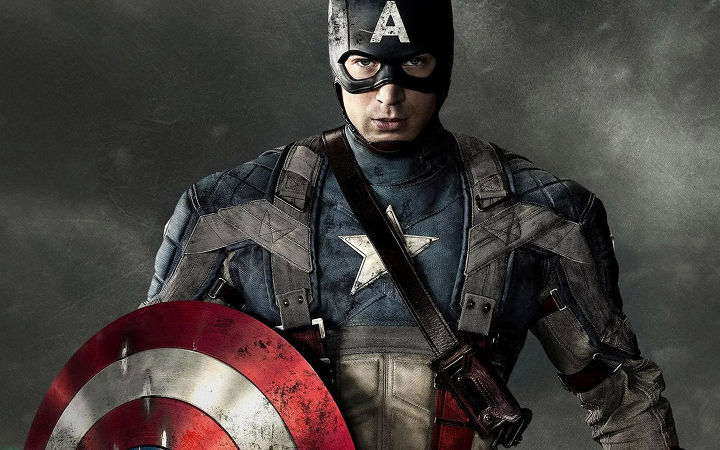
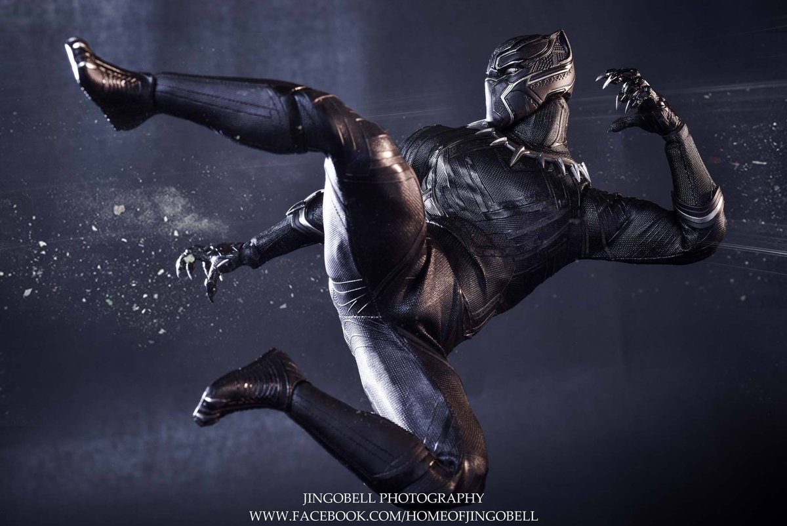
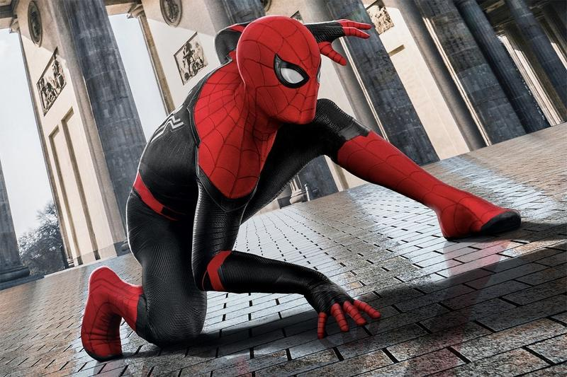

"마블에서 누가 가장 강력할까요? 사람들마다 의견이 다른데, 어떤 정보들이 있는지 살펴봅시다."
"헬리콥터를 맨손으로 세울 수 있을 정도의 강력한 힘을 가진 어벤져스의 리더 캡틴 아메리카."
캡틴 한 사람만 놓고 보면 충분히 강력한 히어로이다. 하지만 초인적인 힘을 가진 다른 히어로들에 비하면 조금 부족한 부분이 있다.
캡틴 > 아이언맨
캡틴 < 토르
"와칸다의 왕 블랙펜서. 그는 수트의 방어력 외에도 기본적인 반사신경, 공격력이 엄청나다"
비브라늄 슈트로 거의 모든 공격을 흡수할 수 있다. 하지만, 자연적인 능력을 사용하는 능력자들에겐 무력한 모습을 보인다. 하지만 인간계에선 충분히 강력하다!
블랙펜서 > 캡틴
블랙펜서 < 비젼
"반사신경과 스피드는 탑 급인 스패이더맨. 새로 합류하면서 놀라운 수준의 강력함을 보여주었다."
새로운 무기를 장착하고 피터는 어벤져스로 합류했다. 그는 스파이더맨 홈커밍에서는 반토막난 여객선의 양쪽을 잡고 완력으로만 버텼을 만큼 힘도 대단하다.
스파이더맨 > 버키
스파이더맨 < 캡틴
캡틴 아메리카

블랙 펜서

스파이더맨
